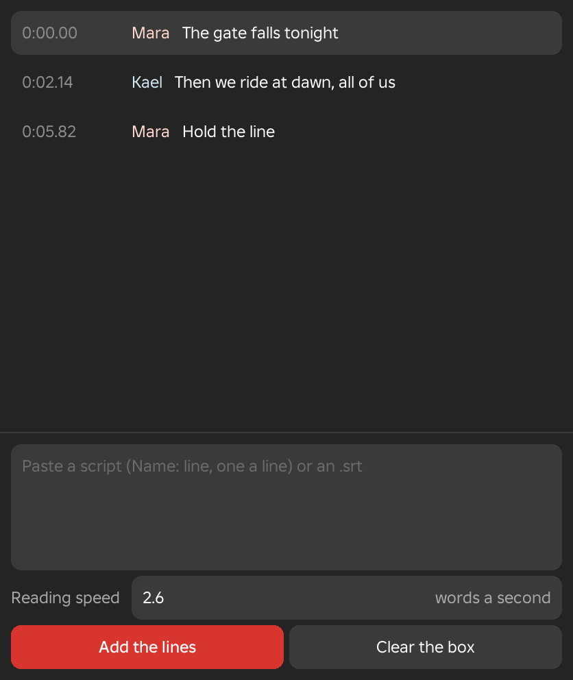
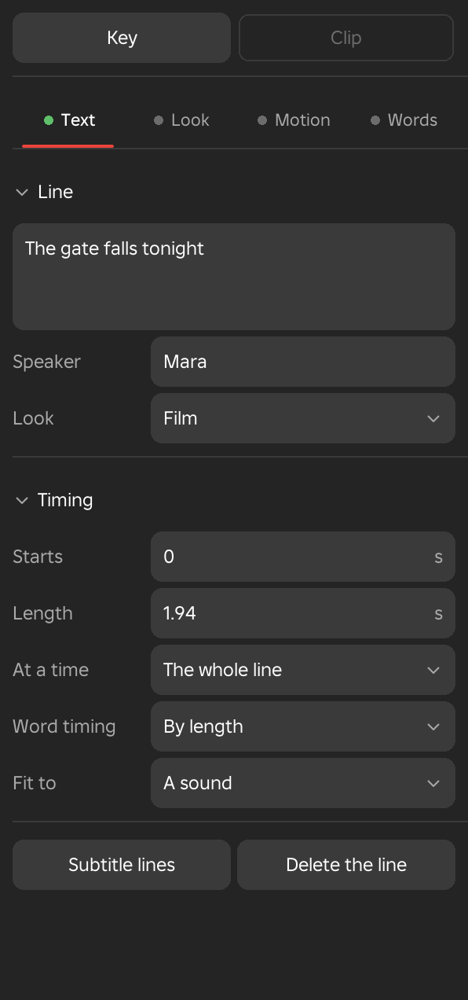
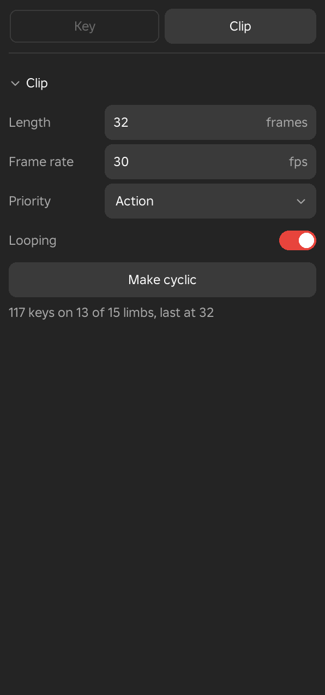
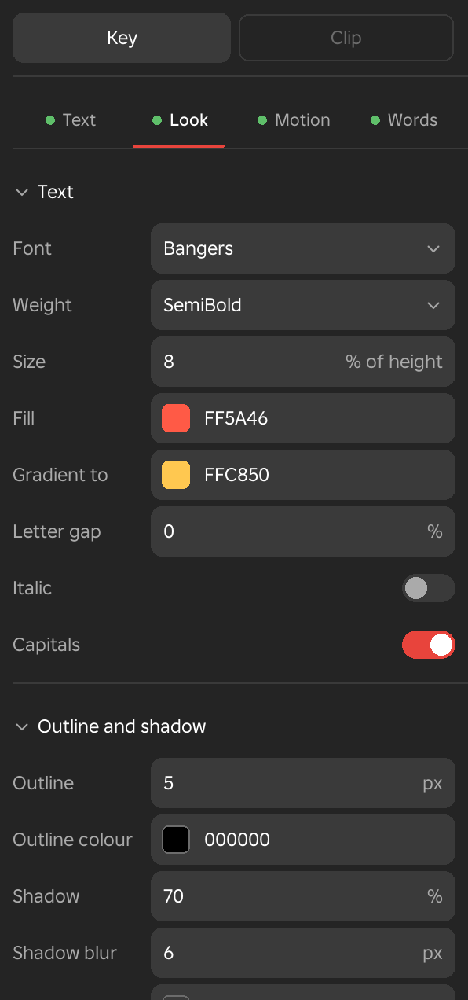
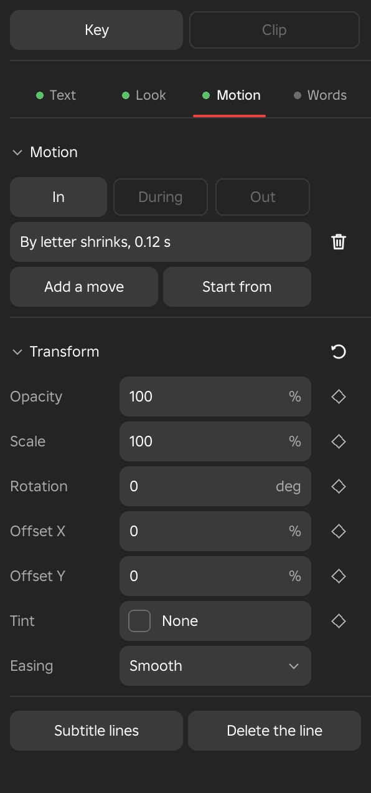
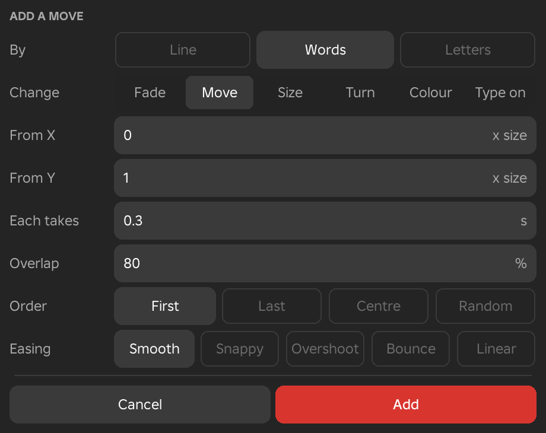
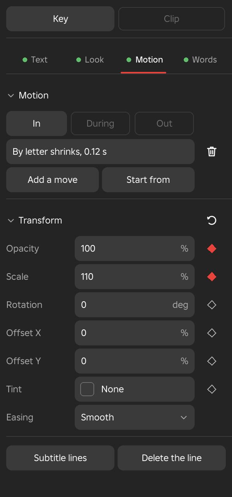
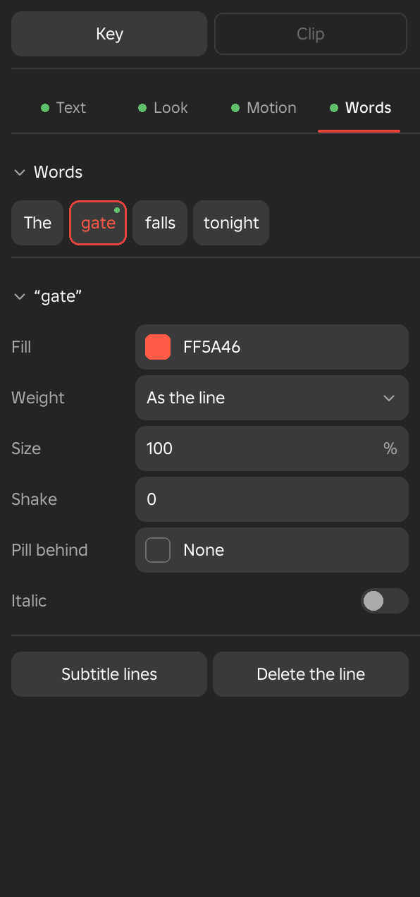

Subtitle Lines
Subtitle lines are the timed dialogue of a scene. The Subtitle lines window lists them and adds many at once from a pasted script or an .srt file, and the subtitle page of the Inspector writes each line and sets how it looks, moves and reads word by word. Both belong to the Scene workspace.
Subtitle Lines Window
- Menu
- View ‣ Windows ‣ Subtitle lines
- Right-click
- A subtitle block ‣ Subtitle lines
- The Subtitles row ‣ Subtitle lines
- Workspace
- Scene
The Subtitle lines window lists every subtitle line of the scene and adds many lines at once. It opens as a floating window, and the Inspector's subtitle page has a button for it as well. Each row shows the line's start time in minutes and seconds, the speaker in the speaker's colour, and the text. The selected line is tinted. Click a row to move the playhead into that line and select it, which also shows its page in the Inspector.
With no lines, the list invites you to paste a script below or double-click the Subtitles row. Outside a scene, it asks you to open one.
To add lines, paste into the box at the foot of the window and press Add the lines. The lines are added to the scene, the box empties, and a message says how many were added. Adding lines needs a scene, and Framez says so when there is none. Each new line takes the look and moves of its speaker's last line, or of the last line in the scene when the speaker is new.
Options
- Paste box
- Holds the script or the .srt file. A script has one line of dialogue on each line of the box, written as Name: line. A name is up to 24 characters and does not end in a digit, so a time such as 10:30 is not taken for a speaker. A line without a name has no speaker. The box also accepts the contents of an .srt file.
- Reading speed
- Words a second, from 0.5 to 8, and 2.6 at first. Script lines are timed from it, starting at the playhead. Each line lasts its number of words divided by the reading speed, plus 0.4 seconds, and at least one second. The next line starts 0.2 seconds after it ends.
- .srt
- Lines from an .srt file keep their own start and end times. The tags in them are removed, a caption that runs over several lines becomes one line, and a name at the start of a caption is read as the speaker.
- Add the lines
- Adds every line in the box.
- Clear the box
- Empties the box without adding anything.
Example
For example, a whole conversation can be pasted as Mara: The gate falls tonight, then Kael: Then we ride at dawn, and appears as a row of coloured blocks, one speaker in each colour. Captions exported from a video editor can be brought in the same way as an .srt file.
See Also
Subtitles adds the Subtitles row, and The Subtitle Page edits one line.

The Subtitle Page
The Subtitle Page
- Menu
- Inspector ‣ a selected subtitle line
- Workspace
- Scene
The subtitle page writes a line and sets how it looks, moves and reads word by word. It shows in the Inspector when a subtitle block is selected and nothing else takes the Inspector first, because a selected limb, key, block or scene item shows its own page before this one. Every change on the page is one undo step.
A strip of four parts runs across the top of the page, and one part is open at a time. A green dot before a part's name means the part holds something of the line's own, such as text, a look, a move or a word's look. A grey dot means the part is empty. At the foot of the page, the Subtitle lines button opens the window that lists every line, and the Delete the line button removes the line.
Options
- Text
- The words of the line, who says it, its starting look, when it shows and how many words show at a time. See Text.
- Look
- The typeface, colours, outline, shadow, box, position, speaker's name and portrait. See Text Style and the sections after it.
- Motion
- The moves that bring the line in, run while it shows and take it out. See Motion.
- Words
- A look for single words. See Words.
Text
Text
- Menu
- Inspector ‣ a selected subtitle line ‣ Text
- Workspace
- Scene
The Text part holds what the line says and when it shows. The first section, Line, has the text and its speaker, and the second, Timing, has the times. The speaker and the starting look are explained in more detail below.
Options
- Line
- A box for the words of the line, which can run to several lines. The text is applied when you click out of the box. Changing the text clears any looks you gave to single words on the Words part.
- Speaker
- The name of who says the line. Each speaker gets one colour on the timeline, in the order they first speak, and the name is shown in capitals above the line. Leave it empty for a line with no speaker.
- Look
- A menu of starting looks and your own saved looks. Its button shows the name of the look in use, Custom after you change any value, or Film for a new line. See Starting Looks and My Looks.
- Starts
- The time the line begins, in seconds from the start of the animation.
- Length
- How long the line shows, in seconds, and at least 0.1.
- At a time
- Shows a long line as pages of a few words. The choices are The whole line, 1 word, 2 words, 3 words, 4 words and 6 words. Each page lasts for the time its words take to say, which is shared out by the length of the words in the line, and a page also ends at a full stop, an exclamation mark or a question mark.
- Word timing
- When each word starts, which the said word, karaoke and pages follow. By length shares the line's time by the length of its words. Tap to time plays the line from its start: press Space as each word starts, and Esc stops. Words not tapped share the rest of the line. After tapping, the row reads Tapped, and By length goes back.
- Fit to
- Lists the scene's sound blocks. Choosing one gives the line the sound's start and length, so a voice line and its subtitle begin and end together.
Example
For example, a long sentence set to 3 words at a time reads like a caption in a short video, with each page replacing the one before it as the words are spoken.

Starting Looks and My Looks
- Menu
- Inspector ‣ a selected subtitle line ‣ Text ‣ Look
- Right-click
- A subtitle block ‣ Look
- Workspace
- Scene
A starting look fills in every value of the line's Look and Motion at once, so one choice gives a finished style. Each value stays yours to change afterwards, and once you change any, the Look button reads Custom. A new line starts with the Film look, which is white SemiBold text with a soft shadow, 7 percent up from the bottom of the shot. Choosing a look replaces the line's look and moves, and it is one undo step.
Options
- Film
- The default. White SemiBold with a soft shadow at the bottom of the shot.
- Captions
- Heavy capitals a little below the middle of the shot, three words at a time, each word popping in, with a pill that follows the word being said.
- Karaoke
- ExtraBold text with a thick outline, in which each word turns yellow as it is said and stays lit.
- Title
- Wide-spaced capitals in the middle of the shot with a warm glow. The letters fade in one after another, and the line fades out as a whole.
- Shout
- Large Bangers capitals with a red-to-yellow gradient and a thick outline. The letters pop in one by one, and the line shakes.
- Whisper
- Smaller, pale, italic text with a soft shadow, whose words fade in one by one.
- Lower third
- A dark box at the lower left of the shot, 40 percent wide, with left-aligned text and a speaker's name at 70 percent of the text size. The line slides in from the left.
- Typewriter
- A typewriter typeface that types on one letter at a time.
- My looks
- Lists the looks you have saved, and is greyed until you save one. Choosing one applies it to the line.
- Save this look as mine...
- Asks for a Name, which starts as the speaker's name or My look, and saves the line's look and moves under it. My looks belong to Studio and are there in every place.
- Use on every line by the speaker
- Gives every other line with the same speaker this line's look and moves. It shows for a line that has a speaker, with the speaker's name in the row.
- Use on every line
- Gives every other line in the scene this line's look and moves.
With several lines selected, a starting look or one of My looks goes to all of them.
Example
For example, give a hero's lines the Shout look, adjust the size and colour until it suits the game, save it as a look, and apply it to every other shout in the scene with one click.
Look
The Look part is split into six sections. Wherever a value is a colour, it is a swatch and a hex code. Click the swatch for a palette of sixteen colours, or type a hex code such as FFD640, which may also be written with three digits. Where a colour may be empty, type None or choose None from the palette.
Text Style
- Menu
- Inspector ‣ a selected subtitle line ‣ Look ‣ Text
- Workspace
- Scene
Text Style sets the typeface and the basic look of the letters. A line starts with Builder Sans in SemiBold, 4.6 percent of the shot's height, in white.
Options
- Font
- The typeface. The fonts are grouped in five kinds, Clean, Narrow and wide, Bold and fun, Handwritten, and Serif and typed. Each kind opens a list in which every name is shown in its own typeface.
- Weight
- Light, Regular, Medium, SemiBold, Bold, ExtraBold or Heavy.
- Size
- The height of the text as a percentage of the shot's height, from 1 to 30.
- Fill
- The colour of the letters.
- Gradient to
- A second colour. The fill blends from Fill at the top of the letters to this colour at the bottom. None gives a solid fill.
- Letter gap
- Space added between the letters, as a percentage of the text size. Negative values bring them closer.
- Italic
- Slants the letters.
- Capitals
- Shows the text in capital letters.
Outline and Shadow
- Menu
- Inspector ‣ a selected subtitle line ‣ Look ‣ Outline and shadow
- Workspace
- Scene
This section keeps the text readable against any background. The outline is a solid edge around each letter, the shadow is a soft shape behind the text, and the glow is a coloured halo around it.
Options
- Outline
- The thickness of the edge in pixels, from 0 to 40, measured on a 1080 pixel tall shot. It is 0 at first.
- Outline colour
- The colour of the edge, black at first.
- Shadow
- How strong the shadow is, from 0 to 100 percent. It is 70 at first.
- Shadow blur
- How soft the shadow's edge is, in pixels from 0 to 60. It is 6 at first.
- Glow
- The colour of a glow around the text, or None for no glow.
- Glow size
- How far the glow spreads, in pixels from 1 to 80. It shows only while Glow has a colour, and is 10 at first.
Box
- Menu
- Inspector ‣ a selected subtitle line ‣ Look ‣ Box
- Workspace
- Scene
The box is a coloured panel behind the whole line, including the speaker's name and the portrait. A new line has no box, because its opacity is 0.
Options
- Colour
- The colour of the panel, black at first.
- Opacity
- How solid the panel is, from 0 to 100 percent. At 0 there is no box.
Place
- Menu
- Inspector ‣ a selected subtitle line ‣ Look ‣ Place
- Workspace
- Scene
Place decides where the line sits in the shot and how wide it may grow. Lines wrap inside their width.
Options
- Position
- Nine tiles, top, middle and bottom by left, centre and right, with the chosen one filled. Bottom centre is the default. A tile at the left or right puts the line against that edge, 5 percent in, and aligns its text to the same side.
- Margin
- The distance from the top or bottom edge, as a percentage of the shot's height. It is 7 at first. With a middle tile chosen, the row is called Offset and moves the line up for positive values.
- Across
- Moves a centred line sideways as a percentage of the shot's width, from -50 to 50. 0 is centred, and negative values move it to the left. For a line at the left or right edge, the row is called Side margin and is the distance from that edge.
- Width
- The widest the line may be, as a percentage of the shot's width, from 10 to 100. It is 80 at first.
- Align
- Left, Centre or Right, how the lines of a wrapped line sit against each other.
Speaker's Name
- Menu
- Inspector ‣ a selected subtitle line ‣ Look ‣ Speaker's name
- Workspace
- Scene
This section shows only for a line that has a speaker. The name is drawn in capitals above the line, in its own colour and size.
Options
- Colour
- The colour of the name, a pale gold at first.
- Size
- The size of the name as a percentage of the line's text size, from 20 to 200. It is 62 at first.
Portrait
- Menu
- Inspector ‣ a selected subtitle line ‣ Look ‣ Portrait
- Workspace
- Scene
A portrait is a small image shown with the line, such as a character's face. Type an image's asset id to add one. Once an image is set, three more rows appear.
Options
- Image
- The asset id of the image. Clearing the field removes the portrait.
- Side
- Left, Right or Above the text.
- Shape
- Circle or Square.
- Size
- The size of the portrait as a percentage of the shot's height, from 4 to 40. It is 12 at first.
Example
For example, a conversation between two characters can give each speaker a portrait on opposite sides, so players see who is speaking.


Motion
Motion
- Menu
- Inspector ‣ a selected subtitle line ‣ Motion
- Workspace
- Scene
The Motion part gives a line movement. It has three phases, chosen by a switch at the top. In moves play as the line appears. During motions keep running for as long as the line shows. Out moves play at the end of the line and take it away. Each phase holds a list of moves, and a phase can hold several that play together. A move changes the line as a whole, word by word or letter by letter.
Each move in the list is described in a few words, for example a move that fades the line in, or one that makes words grow. Click a move to change it in the move box, or click the trash icon on its row to remove it. An empty phase says there are no moves.
Options
- Add a move
- Opens the move box to make a new move in the In or Out phase. In the During phase the button reads Add a motion.
- Start from
- Fills the line's moves from a ready-made set, replacing the moves it has. The sets are Fade in and out, Pop by word, Rise by letter, Typewriter, Slide in, Pill on the said word, Karaoke, Wave, Shake and No motion, which clears every move.
Example
For example, Rise by letter makes each letter drift up and fade in one after another, and Wave keeps the line gently rippling for as long as it shows.

The Move Box
- Menu
- Inspector ‣ a selected subtitle line ‣ Motion ‣ Add a move
- Workspace
- Scene
The move box edits one move. Its title reads Add a move or Change the move for the In and Out phases, and Add a motion or Change the motion for During. Its rows follow what the move changes, so some appear only for some choices. The button at the foot is Add for a new move and Apply for a change.
For In and Out, a move changes the line as a whole, word by word or letter by letter, from an off state to its normal look. An In move runs towards the normal look as the line appears, and an Out move runs away from it at the end of the line, so the same values describe where the line comes from or goes to.
Options
- By
- Line, Words or Letters, the unit the move works on. By words and by letters, each unit moves a little after the one before.
- Change
- Fade, Move, Size, Turn, Colour or Type on. Fade changes how solid the text is, Move slides it, Size grows or shrinks it, Turn rotates it, Colour blends the text from another colour, and Type on shows the letters one at a time.
- From X, From Y
- For Move. How far the text starts from its place, as multiples of the text size, from -20 to 20. The values are 0 and 0.6 at first.
- From size
- For Size. The size the text starts from, as a percentage of its normal size, from 0 to 1000. It is 60 at first.
- From angle
- For Turn. The angle the text starts at, in degrees from -720 to 720. It is 30 at first.
- From colour
- For Colour. The colour the text starts from, shown as a hex code.
- Each takes
- The time one unit takes to complete the change, in seconds from 0.01 to 10. It is 0.25 for a new move.
- Overlap
- Shown for words and letters. How much the changes of neighbouring units overlap, from 0 to 99 percent. At 0 each unit waits for the one before, and higher values run them together. It is 50 for a new move.
- Order
- Shown for words and letters. Which unit goes first, with the choices First, Last, Centre and Random.
- Easing
- Smooth, Snappy, Overshoot, Bounce or Linear, how the change speeds up and slows down. Type on has no easing.
For a motion in the During phase, the first row is Kind, with five choices.
- Wave
- Each word or letter bobs up and down in turn. It has Amount, from 0 to 300 percent of the text size, which is 12 at first, and Speed, from 0.05 to 20 times, which is 1 at first.
- Shake
- The text jitters at random. It has the same Amount and Speed.
- Pulse
- The text swells and shrinks together. It has the same Amount and Speed.
- Colour
- The text cycles through the colours of the rainbow. It has Speed only.
- Said word
- Marks the word being said, timed by the length of the words or by the times tapped in Word timing. Style chooses Pill, which slides a coloured pill behind the word, Lit, which colours the said word, or So far, which colours every word said so far. Colour chooses the colour. Pop is how much the said word swells as it is said, as a percentage of its size, from 0 to 100, and 6 at first.

Transform
- Menu
- Inspector ‣ a selected subtitle line ‣ Motion ‣ Transform
- Workspace
- Scene
Transform animates the whole line over its time with keys, on top of its moves. Each value is keyed at the playhead, which must be inside the line. Typing a value keys it there. The diamond at the right of a row keys the value shown, and clicking a red diamond removes the key at the playhead. A red diamond means a key at the playhead, a white one a value with keys elsewhere, and an outline no keys. Between two keys the value eases from one to the next, and before the first key and after the last it holds. Keys keep their place in time when the line is split or its start is trimmed.
Options
- Opacity
- How solid the whole line is, its box, speaker's name and portrait included, from 0 to 100 percent.
- Scale
- The size of the whole line around its middle, as a percentage.
- Rotation
- Turns the whole line around its middle, in degrees.
- Offset X
- Moves the line right as a percentage of the shot's width. Negative values move it left.
- Offset Y
- Moves the line up as a percentage of the shot's height. Negative values move it down.
- Tint
- A colour over every word that has no fill of its own. None removes the key at the playhead.
- Easing
- How the values move between keys: Smooth, Linear, Overshoot or Bounce, for all the line's keys.
- Remove the line's keys
- The button at the right of the section's title takes every key off the line.
Example
For example, a chapter title can key Opacity from 0 to 100 and Offset Y from -2 to 0 over its first second, with Scale growing slowly from 86 to 106 percent across the whole line.

Words
Words
- Menu
- Inspector ‣ a selected subtitle line ‣ Words
- Workspace
- Scene
The Words part gives single words a look of their own. It shows a chip for each word of the line. Click a chip to select that word, with a red ring round it, and its values appear below. A small green dot on a chip's corner marks a word that already has a look of its own, and a word with its own fill shows that colour on its chip. With no text, the part asks you to type the line first. Changing the line's text clears the word looks.
Options
- Fill
- The word's colour, or None to use the line's.
- Weight
- As the line, or Light, Regular, Medium, SemiBold, Bold, ExtraBold or Heavy.
- Size
- The word's size as a percentage of the line's text size, from 20 to 400. It is 100 at first, which is as the line.
- Shake
- Makes the word tremble, from 0 to 10. 0 is still.
- Pill behind
- A coloured pill behind the word, or None for no pill.
- Italic
- Slants the word.
Example
For example, one word of a sentence can be made larger, red and shaking to stress it, or given a pill to read like a highlighted word in a caption.
